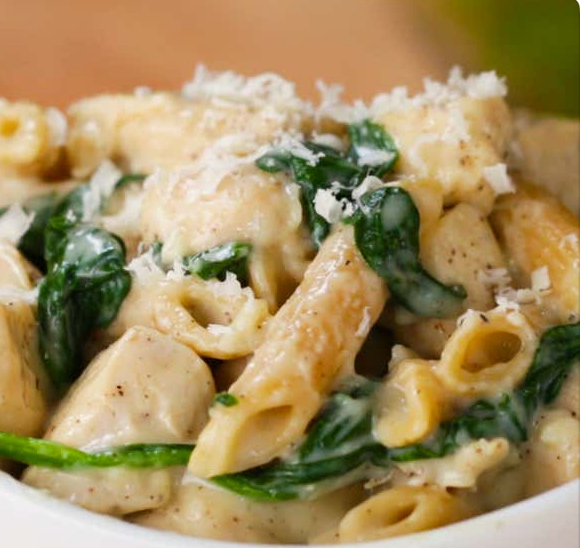

Chicken Alfredo

Delicious and healthy chicken alfredo recipe
This is a fairly simple and easy alfredo recipe for when you're craving some yummy pasta. Not only is this recipe healthier than most alfredo recipes- its delicious too!
It's a dish that the whole family will enjoy and best of all, it only takes 35 minutes. Once you make this recipe your family will be going back for seconds, thirds, and maybe even fourths!
Ingredients
- 1 tablespoon olive oil
- 2 boneless, skinless chicken breast, cubed
- 1 ½ teaspoons Kosher salt
- ¾ teaspoon freshly ground black pepper, divided
- 3 cloves garlic, minced
- 2 tablespoons all-purpose flour
- 1 cup chicken broth
- 1 cup skim milk, or milk of choice
- 2 cups spinach
- 2 cups whole grain penne pasta, cooked
- ¼ cup grated parmesan cheese, optional
Home